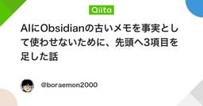
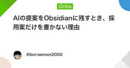
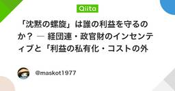
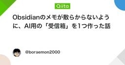

ChatGPTタグが付けられた新着記事 - Qiita
ChatGPTの概要・特徴概要:ChatGPTは、OpenAIが開発した大規模な言語モデルで、GPT（Generative Pre-trained Transformer）アーキテクチャを基にしています。自然言語処理に特化しており、テキストの生成、質問応答、会話のシミュレーションなど、多岐にわたるタスクに対応できます。GPT-3.5やその後継モデルは、膨大なデータを事前学習しており、高度な文章理解と生成能力を持っています。特徴:高度な自然言語理解:大規模なデータセットを基にトレーニングされており、文脈を理解して適切な応答を生成する能力を持っています。多用途性:チャットボット、カスタマーサポート、コンテンツ生成、翻訳、要約など、さまざまなアプリケーションに利用できます。高いカスタマイズ性:APIを通じてさまざまなプラットフォームと連携でき、特定の用途や業務に合わせてカスタマイズ可能です。継続的な学習と改善:新しいデータやフィードバックを基にモデルが継続的に改善されていくため、常に最新の情報に対応することができます。自然な対話:人間のように自然な対話を生成する能力があり、ユーザー体験を向上させます。多言語サポート:多数の言語をサポートしており、グローバルなユーザーにも対応可能です。リファレンス公式サイト:OpenAIAPIドキュメント:OpenAI API Documentation研究論文:GPT-3 Paperオンラインチュートリアル:OpenAI API Quickstart GuideOpenAI GitHub Repositoryコミュニティとサポート:OpenAI Community ForumOpenAI Discord関連タグOpenAI自然言語処理NLPgpt-3AI機械学習DeepLearning
フィード










